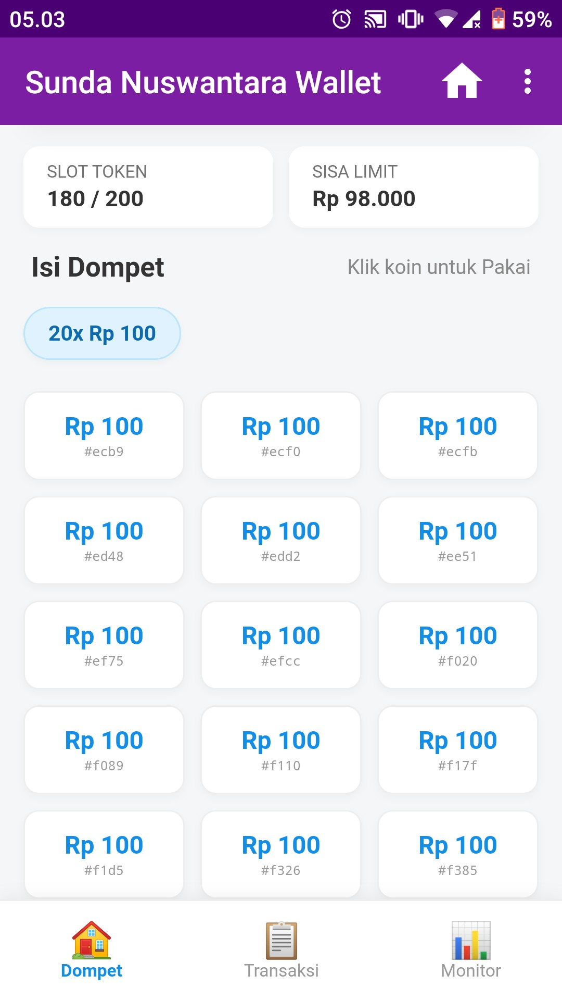
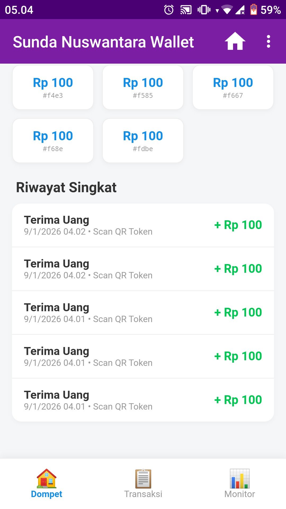
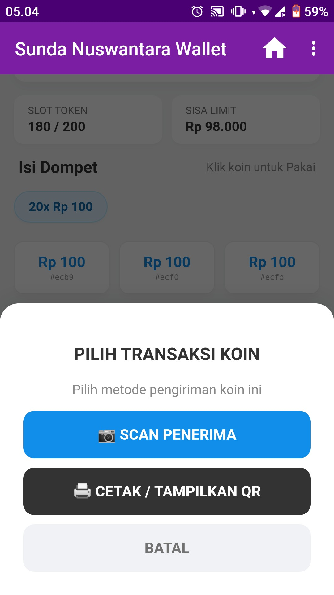
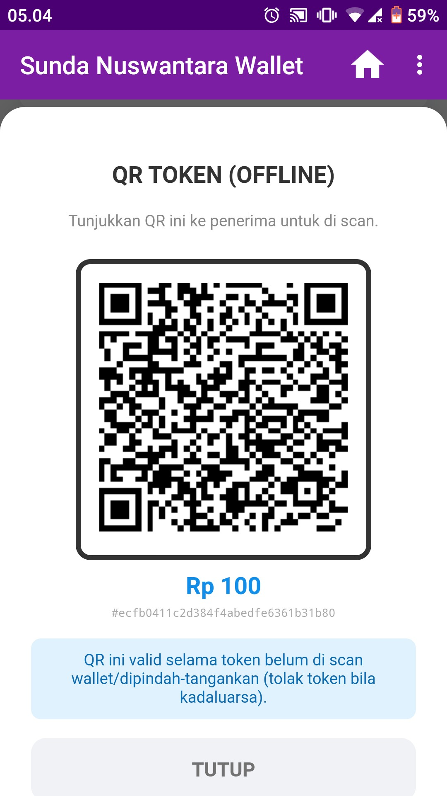
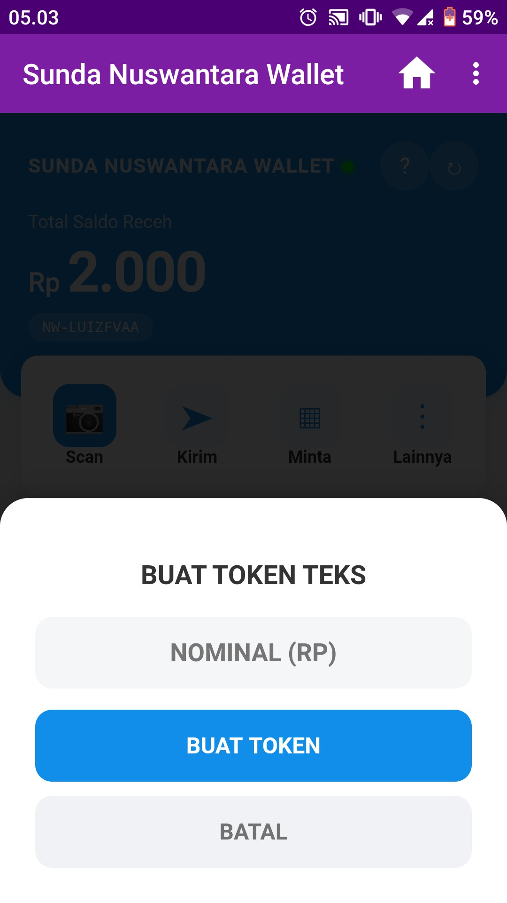
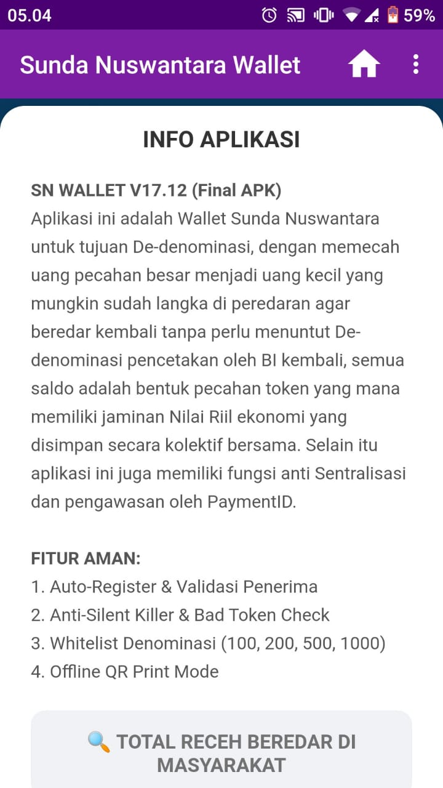
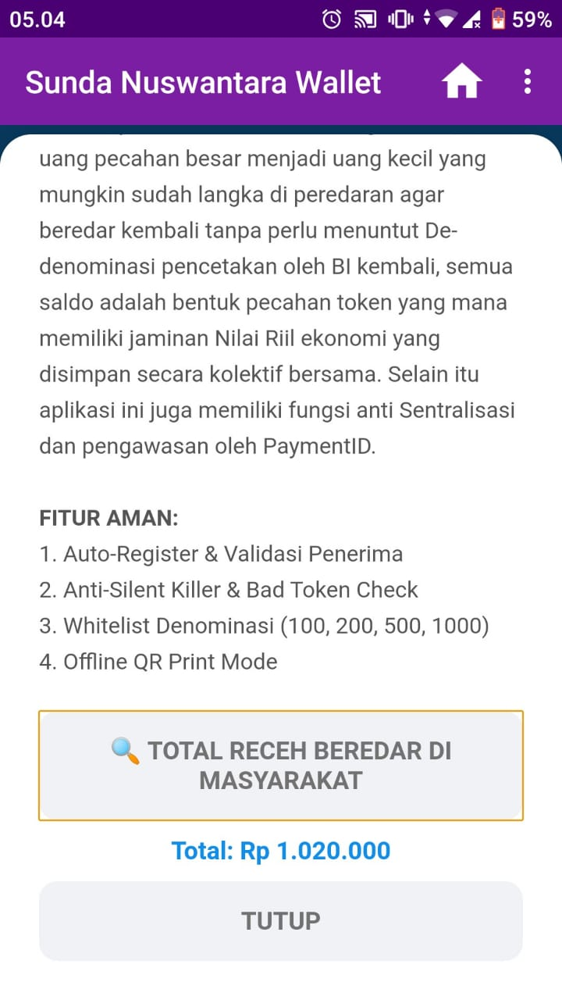
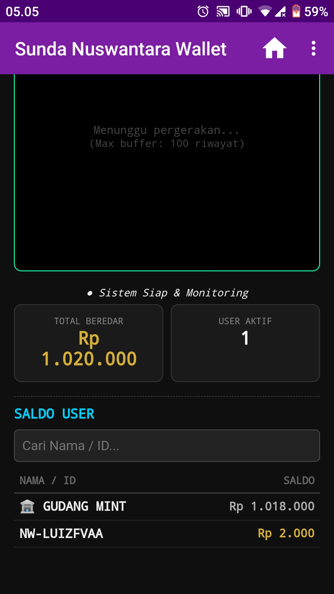
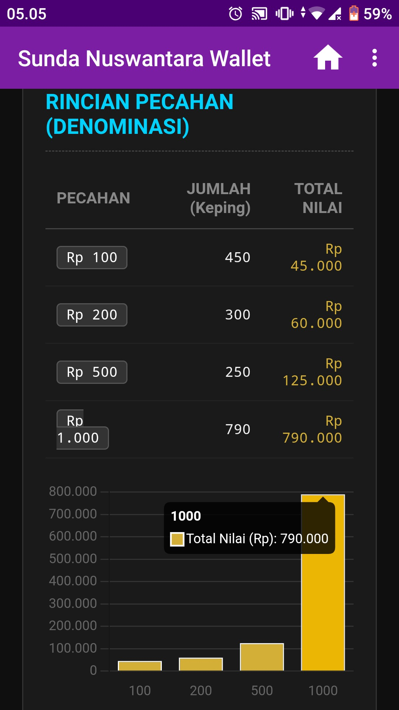
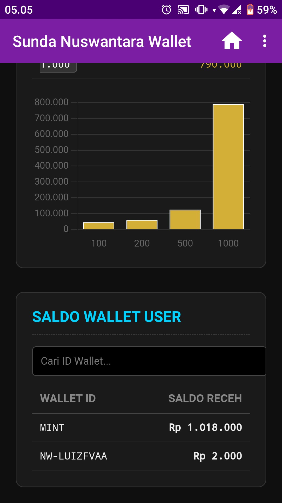

PANDUAN LANJUTAN (PART 2)
Transaksi Offline, Token, Audit & Monitoring
1. MANAJEMEN ASET & KOIN
RINCIAN KOIN
Setiap saldo Anda terdiri dari kepingan koin unik. Anda bisa melihat pecahan apa saja yang Anda miliki (Rp 100, Rp 200, dst) beserta kode uniknya (Hash ID).

RIWAYAT TRANSAKSI
Pantau pergerakan dana masuk dan keluar secara real-time. Riwayat ini mencatat tanggal, jam, dan nominal transaksi.

2. TRANSAKSI KHUSUS (OFFLINE)
A. MENU TRANSAKSI KOIN
Klik salah satu koin di dompet Anda, lalu pilih CETAK / TAMPILKAN QR. Ini berguna untuk transaksi tanpa internet (Offline) atau memberikan uang fisik digital.

B. QR TOKEN (UANG FISIK)
Tunjukkan QR ini ke penerima untuk di-scan.
PERHATIAN: Siapapun yang scan QR ini akan otomatis MENGAMBIL saldo tersebut. QR hanya berlaku 1x scan.

C. TOKEN TEKS (COPY-PASTE)
Alternatif jika kamera rusak. Pilih menu Lainnya > Generate Token. Salin kode teks yang muncul dan kirim via Chat (WA/Telegram) ke penerima.

3. AUDIT & TRANSPARANSI
CEK TOTAL SUPPLY
Klik tombol (?) di pojok kanan atas, lalu pilih TOTAL RECEH BEREDAR. Sistem akan menghitung total uang yang sah di seluruh jaringan.

HASIL AUDIT
Muncul angka total (contoh: Rp 1.020.000). Angka ini menjamin tidak ada inflasi atau pencetakan uang diam-diam oleh Admin. Transparan!

4. PANEL MONITORING (ADMIN)
DASHBOARD EKONOMI
Admin memantau kesehatan ekonomi lewat panel ini.
- GUDANG MINT: Uang cadangan yang belum beredar.
- USER (NW-...): Uang yang sedang dipegang warga.

ANALISA PECAHAN
Grafik ini menunjukkan pecahan mana yang paling banyak beredar (contoh: Rp 1.000 paling mendominasi). Data ini penting untuk kebijakan pencetakan uang baru.

STATISTIK DETAIL
Grafik batang mempermudah visualisasi jumlah keping per denominasi (100, 200, 500, 1000) yang ada di tangan masyarakat.

KEMBALI KE PART 1
© 2026 Sunda Nuswantara Wallet